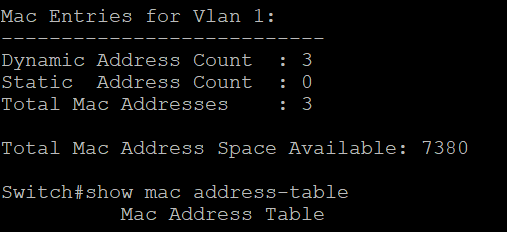
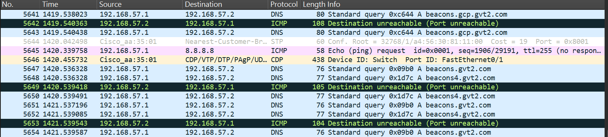
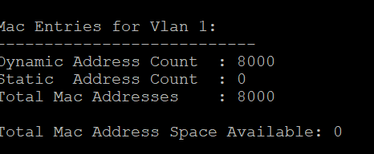
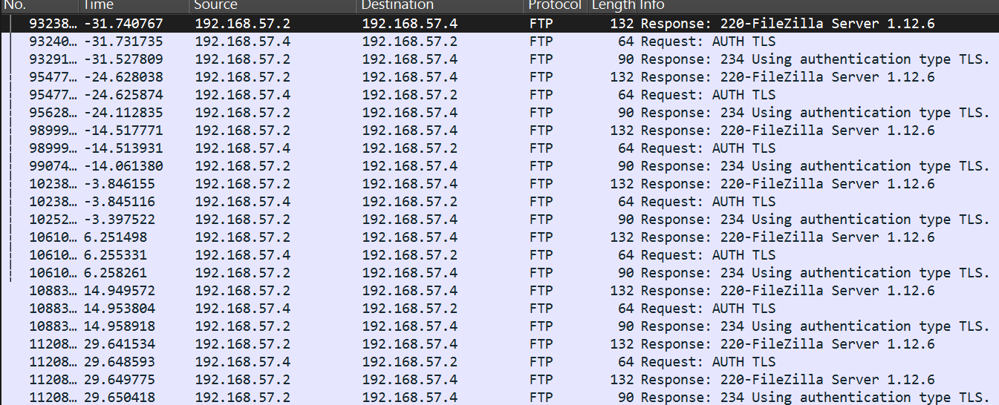
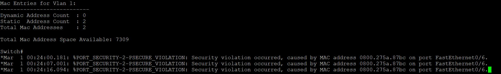

01Principe de l'attaque
Un switch retient, dans sa table d'adresses MAC, sur quel port se trouve chaque machine. Il envoie ainsi chaque trame seulement sur le port de son destinataire : un poste ne voit pas les échanges des autres.
Cette table a une taille limitée. L'attaque MAC flooding l'inonde de trames aux adresses MAC source inventées, jusqu'à la remplir. Le switch ne peut plus apprendre où sont les vraies machines : il envoie alors leurs trames sur tous ses ports, comme un simple concentrateur. L'attaquant peut capturer des échanges qui ne lui sont pas destinés.
02Réseau de test
Le réseau de test, dans le VLAN 1 :
| Machine | Rôle |
|---|---|
| Kali Linux | L'attaquant, une machine virtuelle VirtualBox ; Wireshark capture le trafic de son côté |
| 192.168.57.2 | Serveur FTP (FileZilla Server) |
| 192.168.57.4 | Client FTP |
| Deux switchs Cisco | Reliés entre eux ; les machines y sont réparties |
Avant l'attaque, la table de l'un des switchs ne contient que 3 adresses, pour 7 380 places encore libres :


03Avant l'attaque
Côté attaquant, Wireshark ne voit que son propre trafic (requêtes DNS, ping) et les trames que les switchs envoient à tous : annonces Spanning Tree (STP) et CDP. Les échanges entre le client et le serveur FTP n'y apparaissent pas : le switch ne les envoie pas sur ce port.


04Table MAC saturée
Depuis Kali, l'outil d'attaque envoie des milliers de trames avec des adresses MAC source au hasard. Les tables des deux switchs se remplissent ; sur celui de la figure 3 : 8 000 adresses, plus aucune place libre.


05Ce que voit Wireshark
La capture dépasse maintenant 9 millions de trames. En n'affichant que le FTP, on voit les connexions du client 192.168.57.4 au serveur 192.168.57.2, qui ne sont pas destinées au poste attaquant : le switch les envoie désormais sur tous ses ports.


On voit qui se connecte à qui et à quel moment, ainsi que le nom et la version du serveur (FileZilla Server 1.12.6). Mais chaque connexion commence par AUTH TLS, et le serveur l'accepte (234 Using authentication type TLS). La suite est chiffrée : l'identifiant, le mot de passe et les fichiers échangés ne sont pas lisibles dans la capture.
Avec un FTP sans TLS, l'identifiant et le mot de passe passeraient en clair (commandes USER et PASS) et seraient lisibles dans cette même capture. Ici, seuls les trois premiers messages FTP de chaque connexion sont en clair : le chiffrement protège le contenu, même quand le switch ne joue plus son rôle.
06Protection : port-security
Port-security limite le nombre d'adresses MAC qu'un port du switch accepte. Nous l'avons configuré sur le port de Kali, FastEthernet0/1 :
interface FastEthernet0/1
switchport mode access
switchport port-security
switchport port-security maximum 2
switchport port-security violation restrict
switchport port-security mac-address sticky- Port-security refuse un port en mode dynamique : switchport mode access le fixe en mode accès.
- maximum 2 : le port accepte au plus 2 adresses MAC.
- sticky : le switch retient ces adresses et les ajoute à sa configuration.
- violation restrict : les trames des autres adresses sont refusées et chaque violation est signalée dans les journaux, sans couper le port.
Les alertes de la figure 5 sont signalées sur FastEthernet0/6, le port qui relie les deux switchs : port-security y était donc actif aussi, et c'est par ce lien qu'arrivaient les trames de Kali. Sur un lien entre deux switchs, une limite de 2 adresses bloquerait aussi les autres machines qui passent par ce lien : la protection se place d'abord sur les ports des postes.


07Bilan
- Un switch ne protège pas, à lui seul, la confidentialité du trafic : une fois sa table saturée, un poste du même réseau capture les échanges des autres.
- Le chiffrement limite les dégâts : grâce à TLS, la capture montre les connexions FTP, mais pas les identifiants ni les fichiers.
- Port-security, placé sur le port de l'attaquant, l'empêche de remplir la table du switch. Le mode restrict garde le port actif et signale l'attaque ; le mode shutdown, utilisé par défaut, couperait complètement le port.
Ce TP m'a fait lire une vraie capture avec Wireshark : séparer le trafic de l'attaque du reste, filtrer un protocole, et repérer ce qui passe en clair et ce qui est chiffré.